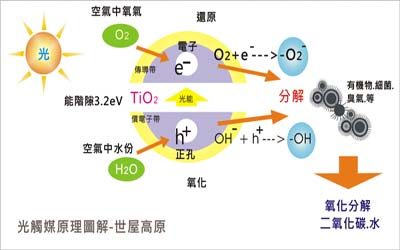
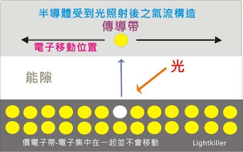

光觸媒應用產品與模組加工(設計、合作)與代工步驟：
1. 依客戶所需(討論用途、目標價)；使用環境條件，其抗菌或抗污效、除臭....等不同功能是否可行。
2. 依被加工材料或元件，選用最佳之光觸媒原料及最佳節省原料之加工法。
3. 產品或模組使用光學設計，使其充份發揮其效果。
4. 其它(專利、安規、效能驗證...等)。
世屋光觸媒及相關奈米材料加工自2002年從日本引進台灣，已具有20年之加工技術與經驗，並榮獲政府研發補助。

(Photocatalyst)
光觸媒：它是利用光的能量及奈米(nano)二氧化鈦Titaniumdioxide)做為觸媒(詳細圖解 )，所引發之一系列之化學變化(理論上觸媒本身不產生任何變化，而實際上觸媒有大自然風化、雨化、摩擦等因素，因此會有些少許變化)，其作用就有點像植物經過陽光照射所產生之光合作用，當觸媒材料經過對應之光波長之照射，會產生電子與電洞，經過空氣中的水分子和氧氣，其能量轉換成強大還原與氧化作用，它具有120 kcal/mol的能量，它能夠分解(破壞)所有的有機物節(大部份有機物之結合鍵能在100 kcal/mol)，詳細光觸媒原理 請點我。
光觸媒是一種化學反應現象，是一種利用光（主要是紫外光）在某材料中產生強氧化性和超親水性的技術,在地球上原本就存在現象，許多物質在奈米化或特殊處理後，更具備此現象，但能否持續，這就和材料本身有很大關係。

安全性： 二氧化鈦是一種天然礦石，年產量約400多萬噸/每年，在塗料、造紙、化妝品、一般食物添加劑及營養食品添加劑都能見到其蹤影，美國FDA早在60年代就將它列為無毒之食品添加劑，日本也在80年代將它列為"完全無毒"之食品添加劑，一般而言使用上述產品中，所使用的Tio2均為數千至數萬奈米單位，而能光媒誘發到觸媒則是30-40 Nano奈米以下，我們都知道細菌是肉眼看不見的，而病毒是更小的，以SARS病毒大小是在 40-80Nano左右，新冠病毒(Coronavirus)則在100nm左右，近年來，國外也對奈米材料做負面研究，是否因粒子太小，而有害呼吸系統，雖然無具體醫學文獻報告，但任何塵粒對人體呼吸道都是有影響的，依據研究顯示，粉塵會造成上呼吸道不適或引發氣喘，最有力證據就是每年沙塵暴來襲都會造成上呼吸道病人增加，由其是 PM2.5(2.5μm懸浮微粒)危害，因此在奈米材料加工或使用時時，必需作呼吸道上的防護，並且其材料具有有良好之附著力，才可商品化，此作法才符合安全。
光觸媒產品，其奈米單位及成份是消費者不可能用肉眼能區分的，因此使用光觸媒之產品，一般人的想法是選擇經認證，但需了解其認證之內容為佳，並非認證產品一定有效，根據研究顯示，也並非一定其材料尺寸越小其效能越佳，應以被反應物來判斷(影響到催化濃度之光強度和光能量分布)舉例來說，著名之P25此光觸媒材料，尺吋在20-30nm間，比市面上許多1nm在光催化活性中更優，日本已於2005年開始使用嚴謹的JIS(日本工業標準)來認證光觸媒產品，台灣也於2010公告CNS部份認證，此規範是參照日本JIS製訂，而我們所生產之模組與代工光觸媒應用產品除遵循JIS此系統，除此之外，我們更在光觸媒雖原材料或加工品上如何保證在加工產品上不至脫落，又不影響其效果，以及光觸媒光學設計等(Exp：在認證部份如果是空氣清淨機則需要電器安規及空氣清淨之認證。)，近年來光觸媒在捕蚊之應用非常普遍，但眾多設計錯誤，也造成低效結果，種種而言，在光觸媒產品開發上需要專業設計才可達其功能。
●在產品上的應用必需考慮到許多條件，並不是每一種產品都適合開發成光觸媒產品(例如：光觸媒洗衣粉是無效)，有關此簡介請參考What's photocatalysis http://www.ligjtkiller.com/photo.html。光觸媒不是萬能仙丹，而是必需要有良好加工設計及使用方法才可達成，光觸媒在環境工程上應用實例可參考 http://www.lightkiller.com/seiya2.html 。
我們提供客戶下列產品開發：1. 光觸媒空氣污染改善模組 2. 光觸媒除臭除TVOC模組 3. 光觸媒防止污垢產品 4. 光觸媒防霧產品 5. 光觸媒抗菌防霉產品 6. 光觸媒鮮度保持水處理 。
光觸媒應用產品與模組加工(設計、合作)與代工步驟：
1. 依客戶所需(討論用途、目標價)；使用環境條件，其抗菌或抗污效、除臭....等不同功能是否可行。
2. 依被加工材料或元件，選用最佳之光觸媒原料及最佳節省原料之加工法。
3. 產品或模組使用光學設計，使其充份發揮其效果。
4. 其它(專利、安規、效能驗證...等)。
世屋光觸媒及相關奈米材料加工自2002年從日本引進台灣，已具有20年之加工技術與經驗，並榮獲政府研發補助。